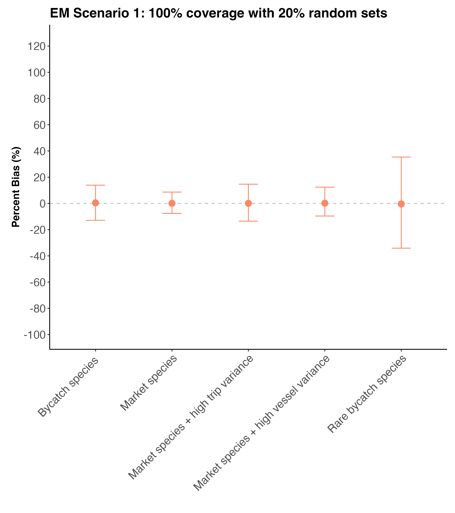
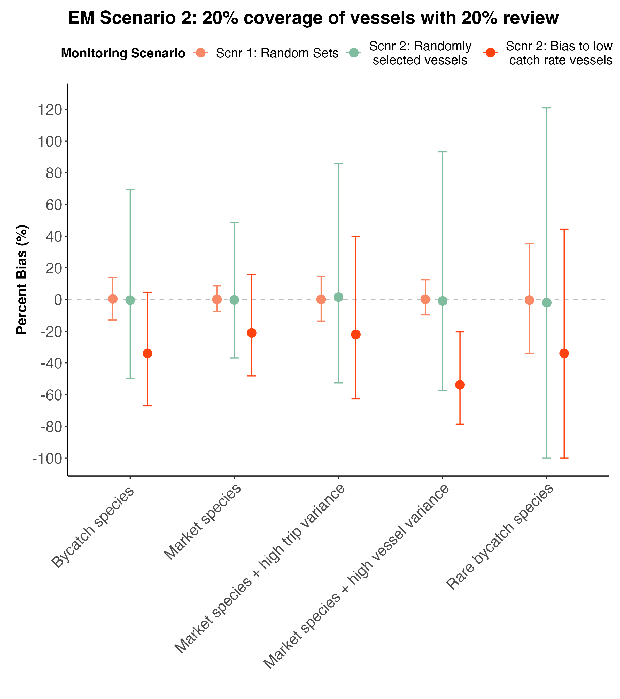
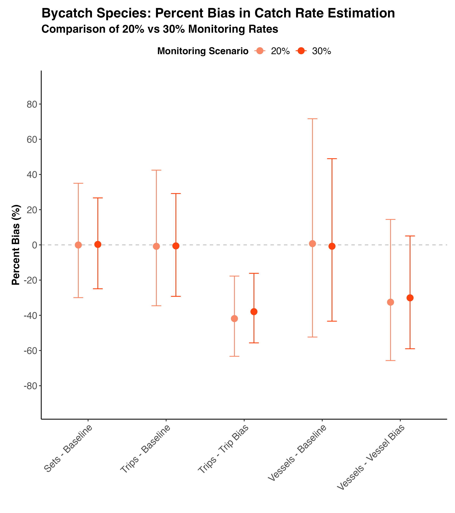
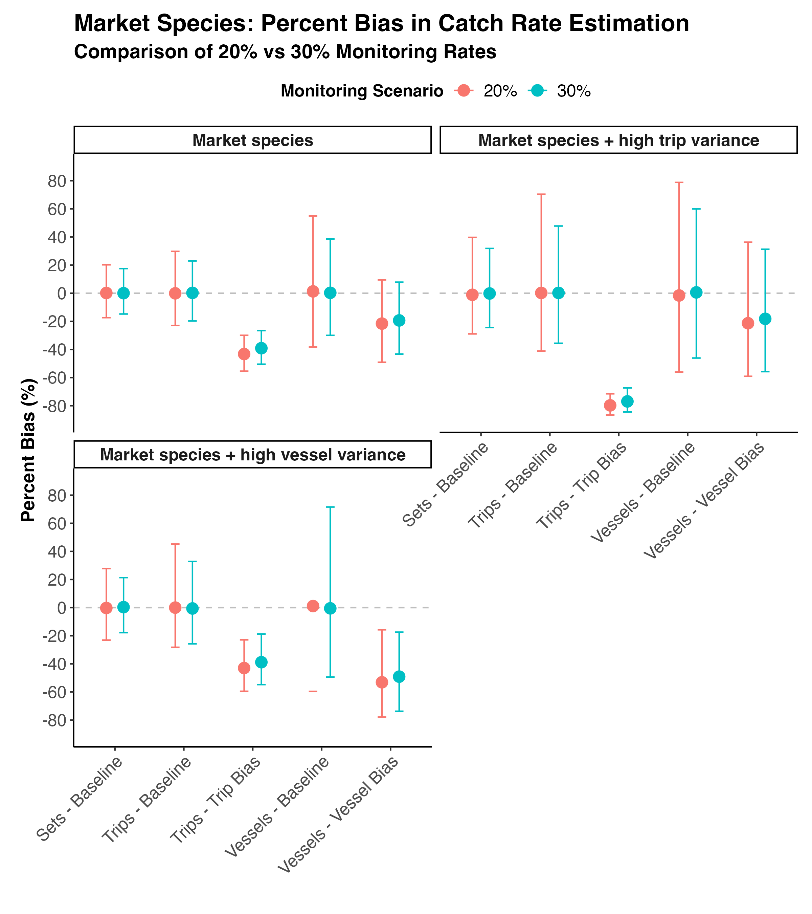

Impact of sampling bias on catch rate estimation
Analysis of catch rate estimation with biased sampling strategies
The problem
Electronic monitoring (EM) uses video cameras and sensors to observe and record fishing activities. The electronic records are later be reviewed as a source of information on fishing activities that is independent of logbooks.
With the growth of electronic monitoring programs around the world over the past decade, various approaches to sampling have been used depending on the fishery, monitoring goals, prevalence of species being monitored, and human capacity to perform data review.
As EM has become a necessary tool for meeting independent fishery observation benchmarks set by Regional Fishery Management Organizations (RFMOs) and sustainability certifications such as the Marine Stewardship Council (MSC), stakeholders have expressed a need for additional guidance on how monitoring gets applied in fisheries to meet target observation rates. Traditionally performed by human observers, EM programs often use a sub-sampling procedure to generate catch statistics that are representative of relevant fishing events, or of entire fisheries.
These sampling procedures for EM programs have been applied in numerous ways and given that the coverage and sampling dynamics are typically different than traditional human observer approaches, more guidance on how sampling procedures can effect data quality and accuracy is needed. Potential issues include sampling bias that causes over or under estimation of catch events [also add TEP interactions?], variation that creates uncertainty about true catch rates and potential to miss important events.
As one example, the Marine Stewardship Council (MSC) requires 30% coverage for independent monitoring of fisheries on the high seas to track statistics like market species catch rate and bycatch. MSC is considering a revised threshold for the evidence requirement framework. However, more guidance is needed to direct exactly how that 20-30% should be chosen. This creates a potential problem: nations and fishing companies might choose to monitor only their “best” 20-30% of vessels or trips - those with the lowest bycatch rates - making their overall performance look better than it actually is.
This study used a computer simulation and a hypothetical fishery to investigate whether different ways of selecting which fishing activities to monitor would give accurate estimates of true catch rates, or if some selection methods, referred to as “scenarios”, would be biased and misleading. We provide narratives for how three different scenarios for monitoring 30% of fishing activities affect the accuracy of estimated catch rates for both target and bycatch.
Why This Matters: If monitoring is biased toward “cleaner” vessels or trips, regulators and the public might think a fishery is performing better than it really is, potentially allowing harmful fishing practices to continue undetected and undeterred.
How The Study Was Done
Catch model
We created a computer simulation that modeled a fictional longline tuna fishing fleet with 50 vessels, based on dynamics of an actual fleet (e.g. Brown et al. 2021). The fictional fishery’s manager has to make a decision about how to allocate monitoring and review of data for the coming year. We assumed the manager knew the number of vessels, but not the amount of fishing they would do or how much they would catch.
We modelled fishing activities over one year. During the year each of the 50 vessels made one or more fishing trips. On each fishing trip they set one or more longlines. We then modelled catch on each longline set.
The number of trips per vessel was randomized to reflect variation that is evident in real long line fisheries. For example, some vessels may only make 2-3 trips in a year whereas others may make more than 10. Likewise, the number of sets per trip was randomized, using a mean of 26 sets per trip. Differences in the number of sets represent trips of different durations. We then modelled catch on each longline set.
In a real fishery, catches vary across sets, due to differences in time, location, fishing gear, fisher behaviour and many other factors. From the perspective of monitoring we see differences in catch across sets. We also see differences in average catch per set across trips. This trip-to-trip variation may be caused by different locations fished, different times and different fishing practices. We also see differences in average catch per set across vessels. This vessel-to-vessel variation reflects different gears, different levels of fisher skill and knowledge and differences in what vessels are targetting. We estimated these three sources of variation from our real data and included them in our simulation. These were included as random variation in average: set-to-set catches, trip-to-trip catches per set and vessel-to-vessel catches per set.
We modelled five categories of catch events with different average catch rates:
- A market species that is a target of fishing and is caught commonly, (e.g. yellowfin tuna)
- A market species similar to (1) except that there was higher variability in catch rates across trips. This represents a situation where captains have greater flexibility to modify their bycatch for example they may fish in different regions, use different gear, or go on shorter trips.
- A market species similar to (1) except that there was higher variability in catch rates across vessels. For example, different vessel captains may have different levels of knowledge about avoiding bycatch or use different fishing gears.
- A by-product species that is caught less consistently than the main market species (e.g. blue shark)
- A rare bycatch species that is caught inconsistently, but is a vulnerable species and/or a designated endangered, threatened, or protected species (e.g. green turtles). The rare bycatch species could also be representative of other rare events, such as trans-shipment
Monitoring and review model
We considered different scenarios for monitoring the fishing activity and reviewing the monitoring data. We use the term monitor to refer to vessels, trips or sets that had human observers or electronic monitoring present. We use the term coverage to indicate the percentage of the sets in a year that were monitored. We use the term review to refer to monitoring data that was obtained and analyzed. What was important in our simulations was the rate of review and whether that review was biased towards some trips or vessels.
We present three monitoring scenarios. For all scenarios we assume data review is of whole sets.
Scenario 1: Monitoring 100% of fishing activity and reviewing 30% of all sets
Monitor 100% of fishing activity on every vessel in the fleet with random review of 30% of sets. This scenario reflects a fleet with 100% EM coverage and 30% review of those sets.
Scenario 2: Monitor and review all sets on 30% of all trips
Review all data from 30% of trips. This scenario reflects human observers who participate in trips and collect data for all fishing on those trips.
We explored two protocols for how monitoring and review of trips was allocated. (1) Trips selected at random. (2) Bias towards trips with lower than average catch rates. The bias simulates situations where captains attempt to decrease the probability of catching bycatch when fishing activity is under human observation, such as by using different gear.
Scenario 3: Reviewing data from whole vessels
Review all data from 30% of vessels. This scenario reflects electronic monitoring systems being installed on 30% of vessels in the fleet, and then all fishing sets from those vessels being reviewed.
We explored two protocols for how monitoring and review was allocated to vessels (that mirrored the two protocols under Scenario 2). (1) Vessels selected at random. (2) Bias towards vessels with lower than average catch rates. This simulates situations where a nation or fishery attempt to influence the data by deploying cameras on vessels with the best practices.
Simulations
Our aim was to explore the likelihood that the three fictional monitoring scenarios would obtain unbiased catch rates when applied to each of the five catch event categories. We simulated a 1000 replicates fishing activity, to capture the full range of variation described for the catch rates. For each of the 1000 replicates we applied each of the three monitoring scenarios along with their respective allocation protocols.
Our outcome statistic - mean bias - was the per cent difference between the mean catch rate as monitored and the true mean catch rate. We calculated mean bias for each catch event category across the 1000 replicates. This statistic represents, on average, how close each monitoring scenario gets to the true catch rate. The ideal situation is to have mean bias of 0%.
We were also interested in the variance in mean bias across the 1000 replicates. The variance represents the consistency in our monitoring results. For example the ideal outcome would be an average bias is 0% and a very low variance (e.g. 1%). This result would indicate a very good chance of getting an accurate catch rate estimate in any given year of fishing.
We could also find that bias is 0%, but variance is high. Such a result would indicate that for any given year of fishing we are quite likely to obtain an estimated catch rate that is a long way off the true catch rate.
Conceptual Framework
** THIS SECTION TO BE UPDATED WITH NEW IMAGE FROM DANIELLE**
This conceptual figure illustrates how different monitoring approaches work. It shows a fishing fleet where dots represent different vessels and their fishing activities. Orange dots are monitored, grey dots are not monitored. The three sampling strategies are shown, demonstrating how monitoring coverage varies depending on the strategy used.
If monitoring is done randomly across all vessel in the fictional fleet we get an estimate of the catch rate that is representative of the true catch rate. If monitoring occurs on a subset of vessels in the fleet with 100% review or on a subset of trips across the fleet, and the selection of those units is biased towards lower catch rates, then the estimated catch rates will also be biased.
Results
Monitoring and review scenarios
Scenario 1: Monitoring 100% of fishing activity and reviewing 30% of all sets
This is the ideal scenario for 30% distribution of review across sets. We randomly selected 30% of all individual sets for review. This results in no bias on average and low variability across replicates for all species. The low variability means a manager can be confident that they will get an estimate of mean catch rate for any single year of fishing that is within 5-10% of the true catch rate.

Scenario 2: Monitor and review all sets on 30% of all trips
Randomly selected 30% of fishing trips for monitoring by a human observer. All sets within the selected trips are reviewed.
The most important finding here was that catch rates were biased too low (by -40% to -80%) if monitoring was biased towards trips with lower than average catch rates meaning that the estimated mean catch rates could be as much as 80% lower than the true mean catch rate. This can happen if vessel captains are changing fishing practices or fishing locations when they know they have an observer on board.
The bias was worse when variation in catches across trips was higher, because in such fisheries vessel captains have more flexibility to change fishing practices.
Even without the biased allocation of observers there was still an issue with allocating monitoring on the basis of trips: there was higher variation across years compared to randomized monitoring of sets due to the clustering of data within trips. This means a manager cannot be as confident that the catch rate they measured is accurate. This issue was worst when there was also high variation across different trips.
Scenario 3: Reviewing data from whole vessels
In this scenario, 30% of vessels are randomly selected for monitoring, and all trips and sets within those vessels are monitored and reviewed. Practically, this strategy can be achieved by installing electronic monitoring systems on a subset of vessels.
If monitoring and review was allocated to vessels with lower than average catch rates, then catch rates were biased too low (by up to 40% on average). This can happen if a fishery or nation is putting cameras on vessels that they know have the lowest bycatch rates.
The bias was worse when variation in catches across vessels was higher, because in such fisheries there is more flexibility to find the ‘best’ operators. For the vessel monitoring scenario, the levels of variation across replicate fishing years were greater than random set scenario, reflecting less confidence in catch rate estimates.

Summary
Monitoring 100% of fishing activity across a fleet with a random allocation of 30% review of sets is the best resource allocation policy for obtaining accurate catch statistics. Allocating 30% monitoring and review by vessels or trips will increase the variability such that managers will be less confident in the catch rates in any given year. Vessel and trip based scenarios also create the opportunity for gaming monitoring, resulting in biased catch rates.
In our simple scenario, vessel based allocation of monitoring resources was better than trip based allocation. This result may differ for different fisheries: it depends on the relative levels of variation in catch rates across vessels and trips. In a fishery where there is a lot of variation in catch rates across vessels, then this allocation strategy will look worse than a trip based strategy. For example, fisheries with a large range of different vessel types could have a much larger range of bycatch rates, and more potential for biased monitoring, than we found here.
An alternative to random allocation of monitoring and review is to stratify sampling by factors known to affect catch rates. For instnace, sampling could be stratified by vessel type, gear type and fishing location. Stratification would perform similarly to our ‘random sets’ scenario, possibly with even greater precision. However, stratification does require good understanding of the factors that affect catch rates. Again, bias is possible if important factors are missed when deciding how to stratify.
Box 1: 20% coverage of sets
Reducing the monitoring and review rate from 30% to 20% increased the variability in estimates across replicate years.

ALT OPTION
Reducing the monitoring and review rate from 30% to 20% increased the variability in estimates across replicate years, it also increased the bias slightly when there was biased allocation of monitoring and review to trips or sets. s

Box 2: Implications of monitoring scenarios for bias in logbook reporting
Logbooks can misreport catch. Especially common is under-reporting of bycatch or TEP species, compared to observer data (e.g. Emery et al. 2019; Brown et al. 2021). Further, logbook records are often incomplete, and these data gaps may be biased towards some components of a fishing fleet (e.g. Bellanger, Macher, and Guyader 2016). Scientific monitoring can be used to validate logbook records, estimate the rate of under-reporting and create an incentive for more accurate logbook reporting.
Observers can increase the accuracy of logbooks when fishers know they are being monitored and there are consequences for inaccurate logbooks(e.g. Emery et al. 2019; Bremner et al. 2009). For example, logbook records of turtle interactions went up by about 10 times when electronic monitoring was implemented in one long-line fishery (Emery et al. 2019). Monitoring with 100% coverage, but partial review of randomly selected fishing events, creates an incentive for more accurate logbook reporting. The scientific credibility of logbook data is weaker when there is selective application of scientific monitoring, especially if it is biased towards trips or vessels with low bycatch rates.
Biased reporting of logbook data also has implications for stock assessments and quota allocations. Stock assessments can be biased to find the current stock status is either too conservative, or not conservative enough when catch data is under-reported (Van Beveren et al. 2017; Rudd and Branch 2017). The effects of catch under-reporting on stock assessments are complex, because assessments typically use complex models with many interacting factors. Key findings are that estimates of reference points will be unreliable if catch is under reported and that under-reporting is not accounted for (Van Beveren et al. 2017). The biggest impact will also occur when the level of bias changes over years. In particular, if the level of bias increases, stock assessments will tend towards being less conservative (i.e. not recognizing overfishing), whereas if the level of bias reduces then stock assessments will tend towards being more conservative (Rudd and Branch 2017).
When a fishery is restructured, catch shares are most often allocated on basis of historical catch data (Lynham 2014). This can create an incentive to over-report in logbooks, if impending management changes are known about by fisheries. In the long-term, biased logbook data may also result in inequitable distribution of catch shares to fishers (Lynham 2014).
Advanced methods
We developed a general model for (1) simulating catch from a year’s worth of fishing activity and (2) simulating monitoring and review of that fishing catch. The model was split into a catch event module that modelled catch per set (Table S1) and a monitoring module that monitored monitoring and review of a sub-sample of all sets (Table S2). Simulation of catch and allocation of monitoring effort were both stochastic. This allowed us to explore how different monitoring scenarios impacted bias in estimated catch rates, with realistic levels of uncertainty. Specifically, our models accounted for uncertainty in: how much fishing activity happens in the coming year, how much catch is taken and by which vessels and on which trips, how monitoring effort is allocated to fishing activities, bias in how monitoring effort is allocated. These different sources of uncertainty were important because a plan for monitoring needs to be made before the fishing activity happens. With our model, we then simulated replicate years of fishing to obtain catch bias estimates along with ranges of variability.
For the catch model we simulated the number of trips per vessel and number of sets per trip, as well as catch per set. Trips per vessel and sets per trip were modelled as random numbers, to reflect real world variation in their numbers. The number of vessels was fixed at 50. Catch per set was modelled as a random number with additive components for vessel identity and trip identity. Therefore, catch events included covariation caused by vessel identity and trip identity.
The monitoring scenarios were modelled by randomly sampling sets, trips or vessels for data review. For the trip and vessel scenarios, a bias parameter was included such that review was biased towards trips or vessels with lower than average catch rates. We considered three monitoring scenarios, as described in the main text.
The random sampling of fishing activities and catch events was repeated to create 1000 datasets of annual fishing activities. Each monitoring scenario was then applied to each of the 1000 fishery datasets. The bias statistics were calculated as the difference between the true catch rate for that dataset and catch rate estimated by the monitoring scenario. The bias statistics therefore represent the difference between the estimated and true catch rates, conditional on each sample of catches. This conditional sampling is reflective of the situation managers face in the real world, where the observed catch rate differs from the true catch rate by an unknown amount. The confidence intervals across the 1000 simulations therefore represent our uncertainty about the accuracy of catch estimation in the coming year, given we know the number of vessels, but we don’t yet know the number of trips, sets or catches those vessels will take.
For a given monitoring scenario M (Table S2) and catch data y, the estimated catch rate per set can be calculated as the average catch per set that was monitored and reviewed:
\[ \hat{C} = \frac{\sum{(y_{v,t,s} * M_{v,t,s})}}{\sum{M_{v,t,s}}} \]
Where \(y_{v,t,s}\) is a matrix of catches and \(M_{v,t,s}\) is a matrix of 0/1 that indicates whether a given set was monitored and reviewed.
The true catch rate in each scenario, C was simply average catch per set.
We calculated two bias statistics, the absolute bias:
\[ B = C - \hat{C} \]
and the bias as a percentage of the catch rate:
\[ 100 * B / C \]
The percent bias is what we present above, because it puts all scenarios on the same scale. The absolute bias was much smaller for rarer species and therefore hard to visualize in comparisons.
All parameters were chosen to be representative of the Western Pacific longline tuna fleets, data given in Brown et al. (2021), parameters are in Tables S3-s5. The analysis was performed with the R program (R Core Team 2024). The code are available online at https://github.com/cbrown5/msc-review-rates.
Table S1 Model Equations and parameters of the catch event module
| Equation | Description | Parameters |
|---|---|---|
| \(T_{v} \sim dnegbin(\mu^{trips}, \theta^{trips})\) | Number of trips per vessel per year | \(\mu^{trips}\): mean number of trips per year, \(\theta^{trips}\): dispersion in trips per year |
| \(x_{v} \sim dnorm(0, \sigma^{x})\) | Vessel-level random effect for catches per set | \(\sigma^{x}\): vessel effect standard deviation |
| \(S_{v,t} \sim dnegbin(\mu^{sets}, \theta^{sets})\) | Number of sets per trip | \(\mu^{sets}\): mean sets per trip, \(\theta^{sets}\): dispersion in sets per trip |
| \(z_{v,t} \sim dnorm(0, \sigma^z)\) | Trip-level random effect for catches | \(\sigma^z\): trip effect standard deviation |
| \(\mu_{v,t} = \beta_{0} + z_{v,t} + x_{v}\) | Expected catch rate per set for a given trip | \(\beta_{0}\): baseline catch rate per set |
| \(y_{v,t,s} \sim dnegbin(\mu_{v,t}, \theta^{catch})\) | Catch per set | \(\theta^{catch}\): catch dispersion |
Notes:
- \(V\): Number of vessels
- \(T_{v}\): Number of trips for vessel \(v\)
- \(S_{v,t}\): Number of sets for trip \(t\) of vessel \(v\)
- \(x_{v}\): Vessel random effect
- \(z_{v,t}\): Trip random effect
- \(\mu_{v,t}\): Expected catch rate for trip \(t\) of vessel \(v\)
- \(y_{v,t,s}\): Catch for set \(s\) on trip \(t\) of vessel \(v\)
Table S2 Model Equations and parameters of the monitoring module
| Equation | Description | Parameters |
|---|---|---|
| \(\phi = \text{logit}(p)\) | Logit of base monitoring probability for set-based sampling | \(p\): proportion of sets monitored (e.g., 0.3) |
| \(M_{v,t,s} \sim \text{Bernoulli}(\text{logit}^{-1}(\phi))\) | Monitoring indicator for random sampling across sets | \(M_{v,t,s}\): 1 if set monitored, 0 otherwise |
| \(\phi_{v,t,s} = \text{logit}(p) + \text{bias}_{vessels} \cdot x_v\) | Logit of monitoring probability for vessel-based sampling, with bias | \(\text{bias}_{vessels}\): vessel bias factor, \(x_v\): vessel random effect |
| \(M_{v,t,s} \sim \text{Bernoulli}(\text{logit}^{-1}(\phi_{v,t,s}))\) | Monitoring indicator for vessel-based sampling | \(M_{v,t,s}\): 1 if set monitored, 0 otherwise |
| \(\phi_{v,t,s} = \text{logit}(p) + \text{bias}_{trip} \cdot z_{v,t}\) | Logit of monitoring probability for trip-based sampling, with bias | \(\text{bias}_{trip}\): trip bias factor, \(z_{v,t}\): trip random effect |
| \(M_{v,t,s} \sim \text{Bernoulli}(\text{logit}^{-1}(\phi_{v,t,s}))\) | Monitoring indicator for trip-based sampling | \(M_{v,t,s}\): 1 if set monitored, 0 otherwise |
Notes:
- \(M_{v,t,s}\): Monitoring indicator for set \(s\) on trip \(t\) of vessel \(v\) (1 = monitored, 0 = not monitored)
- \(p\): Proportion of sets to be monitored and reviewed (review and coverage level)
- \(\text{bias}_{vessels}\), \(\text{bias}_{trip}\): Bias factors for vessel/trip selection (higher values = stronger bias towards lower catch rates)
- \(x_v\): Vessel-level random effect (from catch model)
- \(z_{v,t}\): Trip-level random effect (from catch model)
Table S3 Fixed parameter values. Fleet specific parameters was based on values from Brown et al. (2021).
| Parameter | Value | Description |
|---|---|---|
| V | 50 | Number of vessels in the simulated fleet, representative of medium-sized longline fleet |
| μtrips | 10 | Mean number of trips per vessel per year, based on typical longline operations |
| θtrips | 1.13 | Dispersion parameter for trips per vessel, allows realistic variation in fishing effort |
| μsets | 26 | Mean number of sets per trip, typical for longline tuna fishing |
| θsets | 1.8 | Dispersion parameter for sets per trip, reflects operational variation |
| θcatch | 0.42 | Catch dispersion parameter, controls overdispersion in catch counts |
| p_monitor | 0.3/0.2 | Proportion of sets monitored (e.g. 20%, 30%), as specified by MSC requirements |
Table S4 Parameters for monitoring scenarios.
| Monitoring Set | Description | Coverage and review rate (p_monitor) | Vessel Bias (bias_v) | Trip Bias (bias_factor) |
|---|---|---|---|---|
| 1 | Baseline | 0.3 (30%) | 0 | 0 |
| 2 | Vessel bias | 0.3 (30%) | -2 | 0 |
| 3 | Trip bias | 0.3 (30%) | 0 | -2 |
| 4 | Baseline 20% | 0.2 (20%) | 0 | 0 |
| 5 | Vessel bias 20% | 0.2 (20%) | -2 | 0 |
| 6 | Trip bias 20% | 0.2 (20%) | 0 | -2 |
Table S5 Species-specific parameter values for catch simulations.
| Species Set | Species Type | β₀ | σˣ | σᶻ | θcatch |
|---|---|---|---|---|---|
| 1 | Market species | 5.6 | 0.41 | 0.67 | 0.42 |
| 2 | Market species + high vessel variance | 5.6 | 0.82 | 0.67 | 0.42 |
| 3 | Market species + high trip variance | 5.6 | 0.41 | 1.3 | 0.42 |
| 4 | Bycatch species | 0.08 | 0.55 | 0.65 | 0.42 |
| 5 | Rare bycatch species | 0.008 | 0.55 | 0.65 | 0.42 |